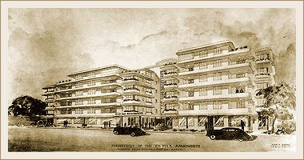

|
j
a v a s c r i p t |
April 1, 1942
VoF didn't come through today. The story around town is that so many bombs landed in the Bay around Corregidor that the soldiers are feasting on fish.

Elena Apartments in South Manila
Hans Menzi told me he had been stuck in a room at the Manila Hotel for six days when the Japanese entered Manila. They knew he was a USAFFE officer but released him on the intervention of Rafael Alunan. He's now staying at the Elena Apartments. Japanese soldiers went there late one night and searched his apartment thoroughly, prodding laundry bags with bayonets. Hans has been slapped a couple of times: once because of his hat, which he doesn't wear anymore, and another time when he was asked if he was an American. No, I'm a Filipino, he said. Born here of Swiss parents, Hans looks nothing like a Filipino, so he got slapped. He got one more after his explanation — for spite. Incidents of bad Japanese behavior continue. A man loaded up a truck with 6,000 eggs for Manila. He was stopped and searched three times on the way over, arriving with 1,200 fewer eggs. A typical trick soldiers play on street vendors is to ask them to show how much money they've made. Then they say it's enough and take what they want without paying. The U.S. Army allowed poor families to cultivate some unused land by Fort McKinley. When the Japanese found out the land belonged to the fort, they took the families' crops, leaving them high and dry. These may be small incidents, but they add up to a lot of pain. |
|
|
|
|